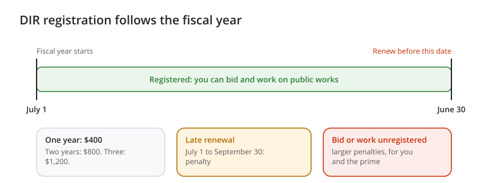

DIR public works contractor registration
In one sentence: every contractor and subcontractor on a public works job over the thresholds must hold a current DIR public works contractor registration, from the moment it bids until its last day of work.

Who must register
Any contractor or subcontractor that bids on or performs public works on a construction project over $25,000 or a maintenance project over $15,000. Registration is with the Department of Industrial Relations, through its online public works portal. It is separate from your CSLB license.
What it takes
To register you certify that you:
- carry workers' compensation coverage for any employees, and use only registered subcontractors;
- hold a CSLB license if your trade requires one;
- have no delinquent unpaid wage or penalty assessments;
- are not debarred under state or federal law.
What it costs and when it renews
As of November 2026, DIR's page lists $400 for one fiscal year, $800 for two and $1,200 for three. The registration year runs July 1 to June 30. Late renewal carries a penalty, and working or bidding while unregistered carries larger ones, so put the renewal date on the company calendar.
The registration number
You'll write it on your bid, on your subcontractor list (for each sub) and on certified payroll. Agencies may not accept a bid or sign a contract or subcontract without proof of current registration.
The project side
The awarding body registers the project with DIR (form PWC-100) after award. That record is what your certified payroll is filed against. If you can't find the project in DIR's system, ask the agency: it is their filing. See Certified payroll.
If a sub isn't registered
The prime can be penalized for using an unregistered sub, and the sub can't lawfully work on the job. Check registration on DIR's public search before the sub mobilizes, and again after July 1 each year.
Common mistakes / what agencies actually check
- Renewing late in July while already working on a public job.
- Checking a sub's registration once at bid time and never again.
- Confusing the project's PWC-100 (agency) with your own registration (contractor).